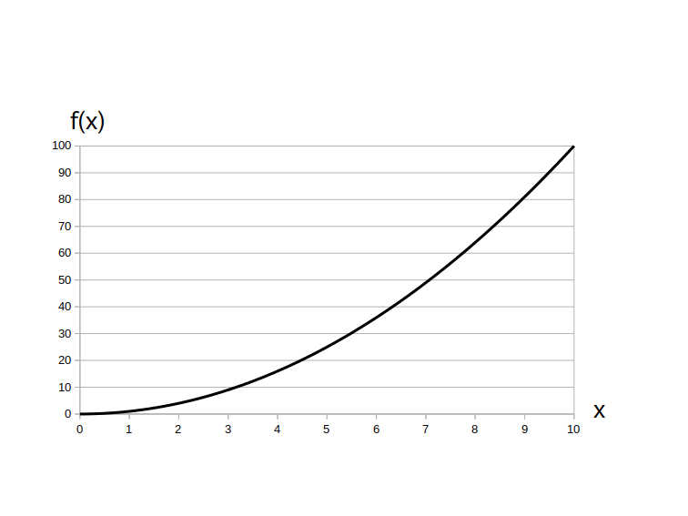

アナログ信号は関数 $f(x)$ の形で表されますので、まずは関数の定義から復習しましょう。
関数 $f(x)$ の $x$ の事を「独立変数 $x$」と言って関数 $f(x)$ への入力値を表します。 独立変数 $x$ が取り得る値の範囲の事を「関数$f(x)$の定義域」と言います。 一方、定義域内で関数 $f(x)$が 取り得る値の範囲の事を「関数$f(x)$の値域」といいます。
アナログ信号の定義は文献によって微妙に違うのですが、一般的には独立変数 $x$ が連続的な実数値であるとき、その関数 $f(x)$ のことをアナログ信号と呼びます。
※ 値域は連続的でなくても可
例として図1にアナログ信号 $f(x) = x^2$ のグラフを示します。
$f(x) = x^2$
定義域は $0 \leq x \leq 10$
値域は $0 \leq f(x) \leq 100$
